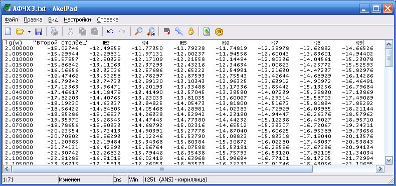
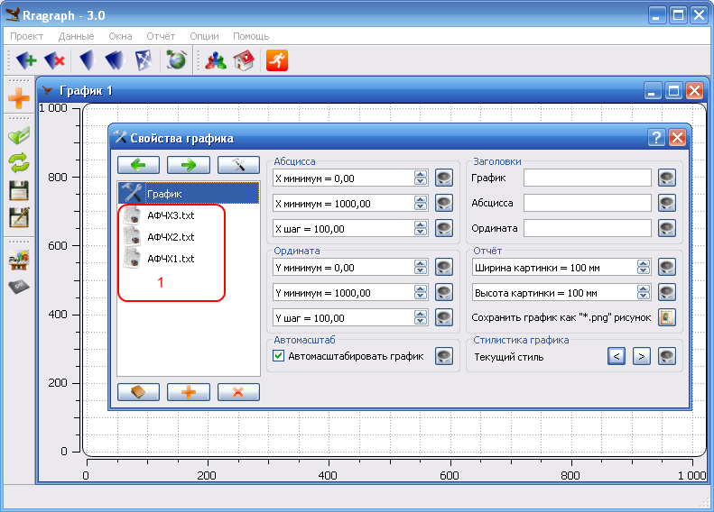
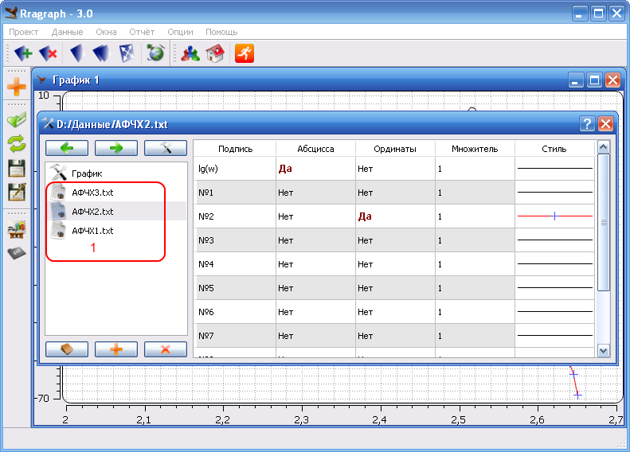
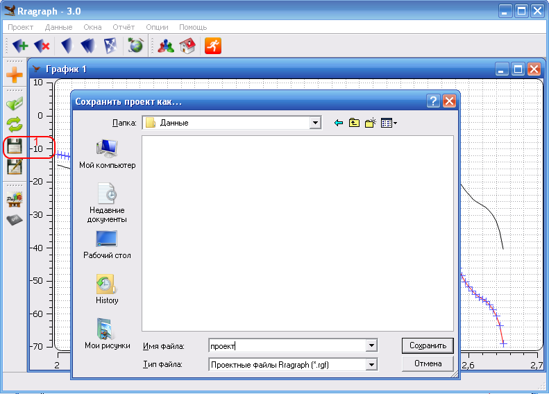
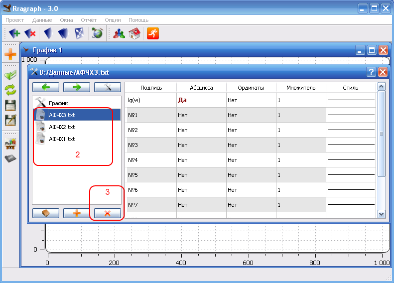
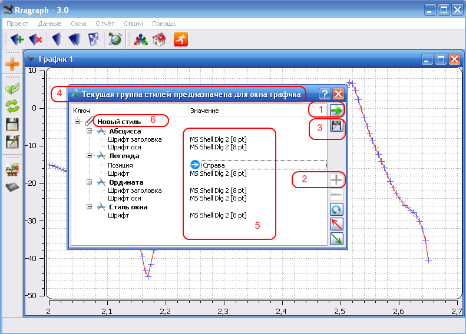
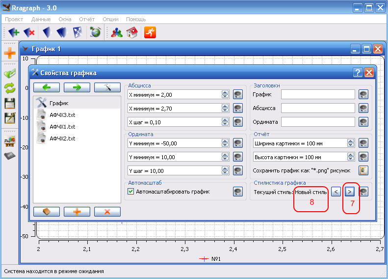

РУКОВОДСТВО ПОЛЬЗОВАТЕЛЯ
Шаг 1 - смена локализации
Язые приложения по умолчанию - английский и возможно, первое что Вам захочется сделать - это сменить локализацию. Для этого выполните "Options/Language/Русский". Далее по документу, при описании действий будем предполагать, что у Вас установлена русская локализация.Шаг 2 - добавьте данные
Выполните действие "Данные/Добавить" или (1). В появившемся диалоге выбора файлов укажите необходимые данные и нажмите клавишу открыть (2).
В качестве исходных данных выступает любой текстовый файл, сформированный по следующим правилам: первая строка - заголовки к столбцам с числовыми данными, разделённые пробелами или знаками табуляции. Если Вы хотите, чтобы подпись к столбцу содержала пробелы, заключите её в кавычки. Последующие строки - вещественные числа должны быть разделены пробелами или знаками табуляции. Если число чисел во второй или последующей строке не совпадает с числом заголовков, лишнии данные будут отброшены, а недостающие позиции будут заполнены нулями. Пример правильно сформированного текстового файла приведён ниже. 
Шаг 3 - создайте окно просмотра
Выполните действие "Окна/Новое" и щёлкните правой кнопкой мыши по облости окна. На экране отобразится диалог с настройками текущего графика. Выберите любой файл из списка (1). В правой части диалога отобразится интерфейс настройки кривых. В столбце "Подпись" задаётся подпись к текущему параметру. В столбце "Абсцисса" и "Ордината" выбираются аргумент и значения, которые Вы хотите отобразить на текущем окне. В столбце "Множитель задаётся" множитель для значения, данная опция бывает полезна при масштабировании графиков. В столбце "Стиль" выбирается стиль кривой. Сейчас выберите аргумент и задайте несколько значений. Закройте окно свойств и выполните "Окна/Масштаб".

Шаг 4 - работа с проектом
Выполните действие "Проект/Сохранить" или (1). При помощи появившегося диалога сохраните проект. Вызовите диалог свойств графика щелчком правой кнопкой по области отображения графика.

В списке (2) выделите любой файл и выполняйте действие (3) пока список (2) не окажется пуст. Закройте окно свойст графика и выполните действие "Окна/Закрыть". Теперь в меню "Проект/Недавно закрытые/" найдите проект, которые Вы сохранили выше и загрузите его - рисунки и файлы восстановятся.
Шаг 5 - настройка стилей
Выполните действие "Опции/Редактор стилей". Если в появившемся диалоге, заголовок окна не соответствует заголовку (4), выполните действие (1). Затем выполните действие (2). На данном рисунке это действие неактивно, из-за того что курсор находится не на корневой позиции. Произведите настройку стиля. В области (5) задайте положение легенды и желаемые шрифты. В области (6) задайте желаемое имя. В нашем случае оставим имя по умолчанию. Выполните действие (3). Закройте диалог редактирования стилей. Правым щелчком кнопкой мышки по области графика вызовите диалог редактирования свойств и перейдите на вкладку "График". Выполняйте действие (7) до тех пор, пока в области (8) не появится имя вышесозданного стиля.

Шаг 6 - формирование отчёта

Вызовите диалог свойств графика щелчком правой кнопкой по области отображения графика. Выберите (1) и в появившейся области (2) задайте нужный размер картинки, которую Вы хотите получить, в миллиметрах. Закройте окно свойств и выполните действие (3) или "Отчёт как PNG". При помощи появившегося диалога укажите директорию, куда Вы хотите сохранить рисунки.